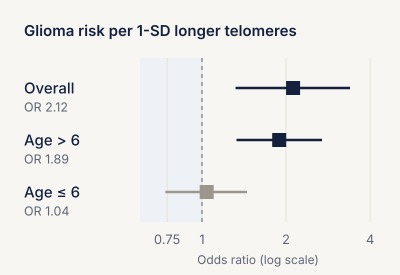
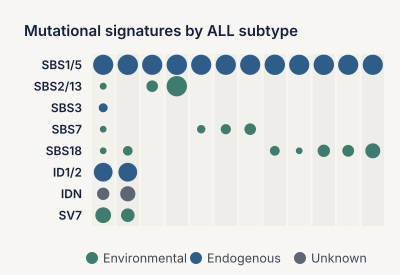
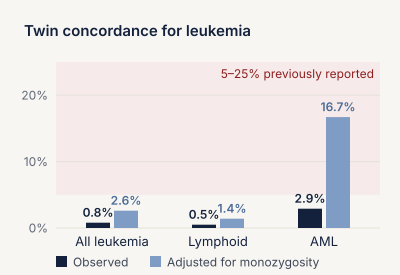

I study germline genetic susceptibility to childhood and early-onset cancers — using newborn blood spots, population registries and multi-ancestry genomic data to find heritable risk where it has been least well characterized.
Childhood brain tumors, leukemia and sarcoma, and the second primary cancers that can follow.
Genomic data from newborn blood spots and statewide registries, along with pooled data from international consortia.
From GWAS and post-GWAS analyses to methylation profiling and WES.
Turning genetic and genomic information into risk stratification and precision prevention strategies that serve every community.



Whether it’s a research collaboration, a question about my clinical and research experience, or teaching and mentoring, I’d be glad to hear from you.